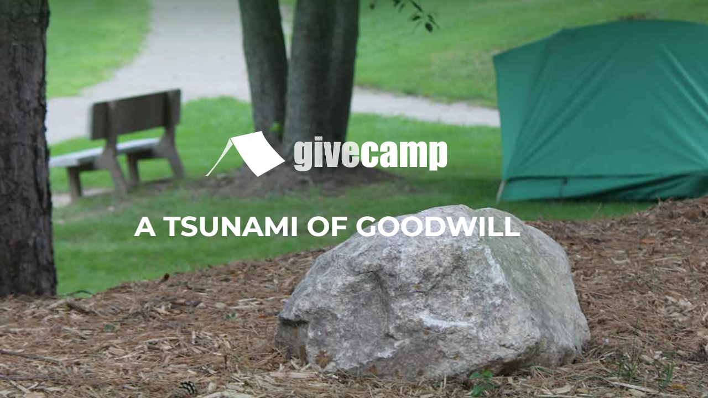
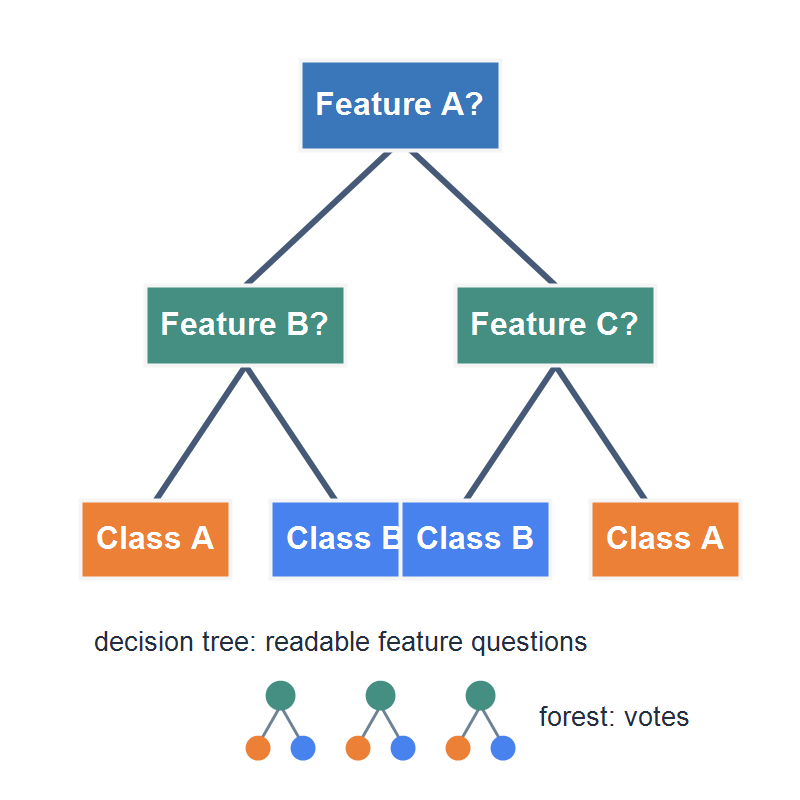
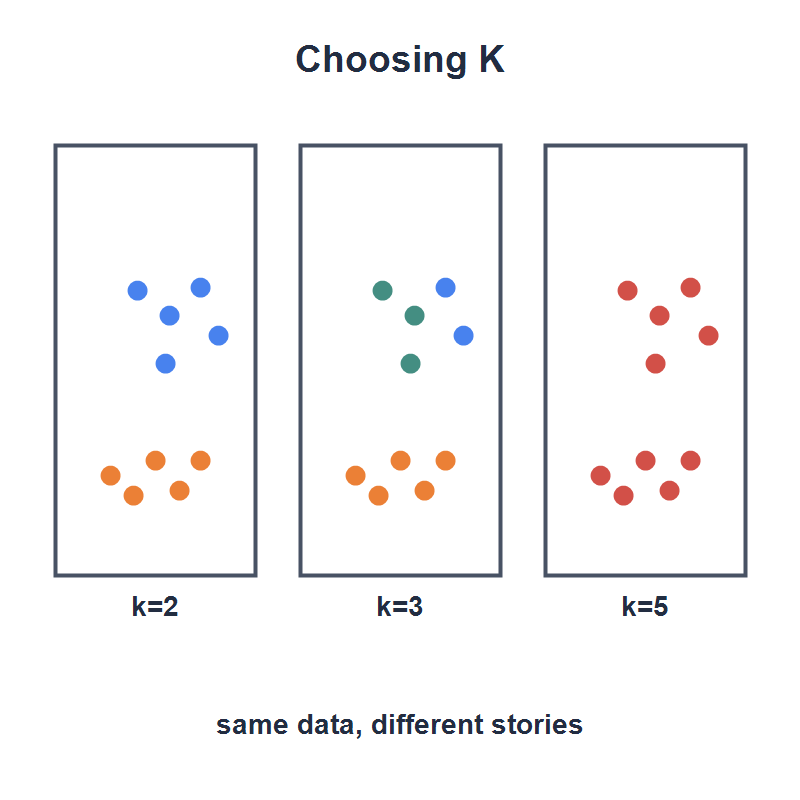
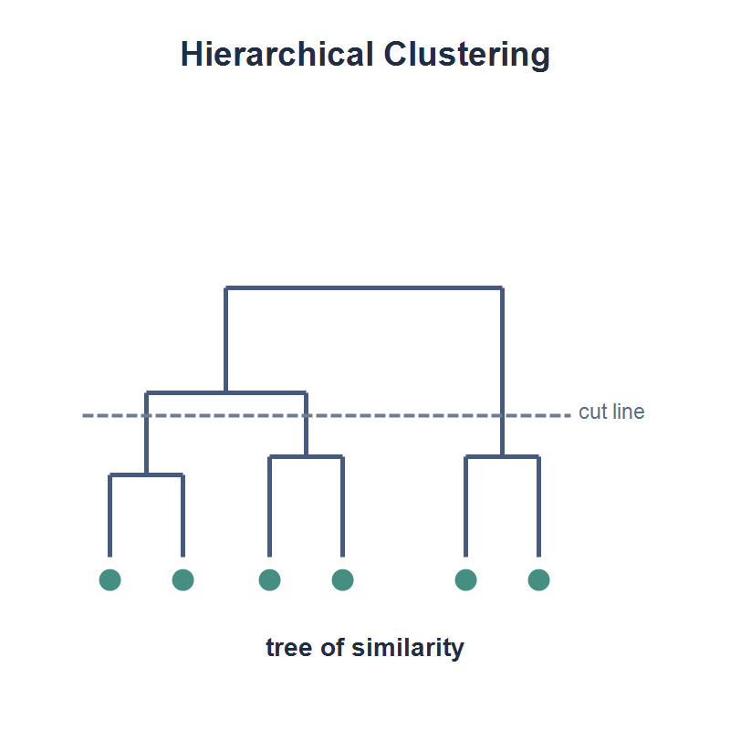

Semantic CartographyAlgorithms for Understanding and Organizing Your DataBarry S. StahlPrincipal Engineer - AZNerds.net@bsstahl@cognitiveinheritance.comhttps://CognitiveInheritance.com |
Favorite Physicists & Mathematicians
Favorite Physicists
Other notables: Stephen Hawking, Edwin Hubble, Leonard Susskind, Christiaan Huygens |
Favorite Mathematicians
Other notables: Blaise Pascal, Daphne Koller, Grady Booch, Evelyn Berezin, Pascal Van Hentenryck |
Fediverse Supporter
|

|
Some OSS Projects I Run
- Liquid Victor : Media tracking and aggregation [used to assemble this presentation]
- Prehensile Pony-Tail : A static site generator built in c#
- TestHelperExtensions : A set of extension methods helpful when building unit tests
- Conference Scheduler : A conference schedule optimizer
- IntentBot : A microservices framework for creating conversational bots on top of Bot Framework
- LiquidNun : Library of abstractions and implementations for loosely-coupled applications
- Toastmasters Agenda : A c# library and website for generating agenda's for Toastmasters meetings
- ProtoBuf Data Mapper : A c# library for mapping and transforming ProtoBuf messages
http://GiveCamp.org

Achievement Unlocked

Classification
|
Assigning Meaningful Labels
- Start with known labels:
- Spam or not spam
- Defect or no defect
- Support ticket category
- Image contents
- The model is trained from labeled examples
- Then it predicts the best label for new inputs
Shape of a Classification Problem
Labeled examples show the model what the right answer looks like
- Each example includes input data plus the correct label
Features are the details the model is allowed to use
- Measurements, properties, words, pixels, counts, or categories
- Chosen because they may help separate one label from another
Target classes are the labels the model is allowed to predict
- The known categories we care about
- The output must be one of these classes
Training searches for a pattern from features to target class
Prediction applies that pattern to an unlabeled input
Decision Boundaries
|

|
Rule-Based vs Tree-Based
|
 |
Linear Classifiers
|

|
Instance-Based Classifiers
|

|
Probabilistic Classifiers
|

|
Evaluating Classification Results
|

|
Classification vs Clustering
|

|
Clustering
|

|
K-Means Clustering
|

|
Choosing K and Reading the Result
|
 |
Hierarchical Clustering
|
 |
DBSCAN
|

|
Evaluating Clustering Results
|

|